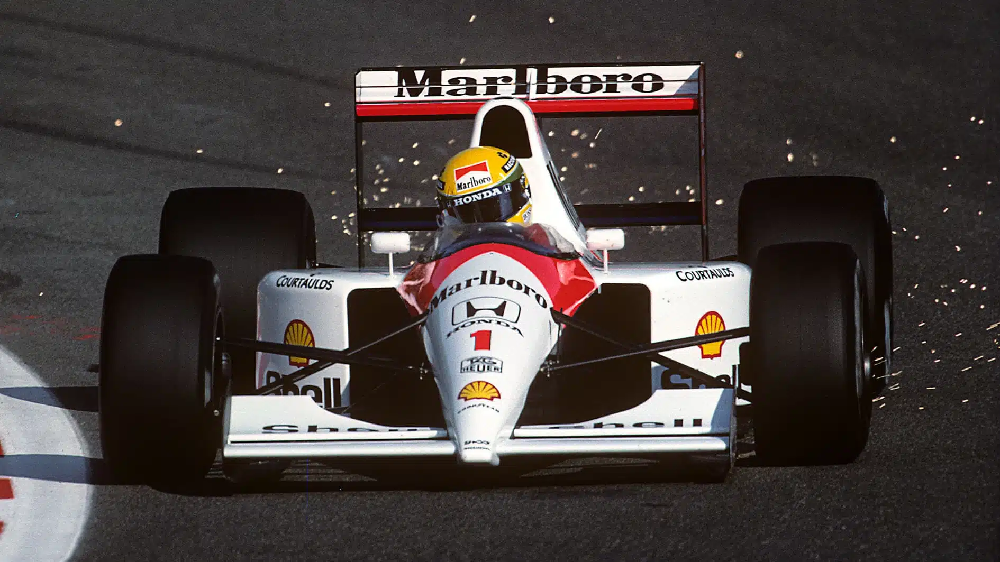

McLaren

The Papayas
The McLaren Racing Formula 1 team is the second oldest on the grid; the team joined in 1966 and has since won 9 WDC and 12 WCC. Many of the greatest drivers have driven for them including Ayrton Senna, Alain Prost, Lewis Hamilton, Niki Lauda, Emmerson Fittipaldi and many more. They currently have one of the strongest driver lineups this year and are likely to win the constructors and maybe the drivers championships. In the past the team has been classic white and red but in recent years they have changed to a striking 'papaya'.
